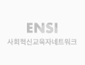

SI Research
연구 논문
ENSI Research Fellow의 연구 결과는 각 분야의 정통한 학술지에 연구 결과를 게재하고 있습니다.
청년들의 사회적 경제 인식 분석을 통한 청년 진로교육에
관한 연구: 포토보이스 (hotovoice) 방법론 활용
관한 연구: 포토보이스 (hotovoice) 방법론 활용
등록일
2018.08.20
조회수
100,000
학술지 : 벤처창업연구 제 13권 제 4호 (통권 58호)
이현준 교수님
부산대학교 아날로그 + 디지털 학부 교수
오지석
중앙대학교 경영학부 교수

본 연구의 목적은 청년층으로서 대학생들이 사회적 경제에 대 여 어떻게 인식 고 있는지와 진로에 대한 기피요인을 살펴보고자 였다. 본 연구의 연구참여자는 서울 소재 대학의 SEN 동아리 활동을 고 있는 5명의 대학생과 함께 2주 간격으로 3회 진행되었다. 연구의 목적을 달성 기 위 여 연구자가 직접 참여 는 연구기법인 포토보이스 (Photovoice)라는 질적 연구방법을 활용 였다. 사회적 경제라는 대주제 에 참여자들이 선정 여 다룬 세 가지 주제는‘내가 생각 는 사회적 경제란’,‘나에게 SEN이란’,‘나의 향후 진로는’이였으며, 각 주제별로 참여자가 사진을 통해 본인의 생각을 표현 고 다른 사람의 의견을 청취 여 공유 였다. 이러한 연구의 결과는 다음과 같다. 첫째, 연구에 참여한 대학생들은 사회적 경제에 대 여 사회의‘다양성’,‘배려’, ‘협동’,‘협력’,‘도움’,‘이해상충’등으로 찍은 사진의 의미를 부여 였다. 둘째, 연구 참여 대학생들은 SEN에 대 여‘즐거움’,‘행복’,‘희망’,‘공동체’,‘소속감’,‘애증’등으로 찍은 사진의 의미를 부여 였다. 셋째, 연구 참여 대학생들은 향후 진로에 대 여 ‘ 함’, ‘ 고 싶은 일’, ‘공공에 대한 진로’ 등으로 찍은 사진의 의미를 부여 였다. 마지 으로 졸업생들의 진로에 대한 심층인터뷰 결과를 살펴보면 현실적으로 사회경제적 조직으로 진출이 쉽지 않은 것으로 나타났다. 이러한 연구결과를 토대로 사회적 경제에 대한 인식제고와 청년층의 진로에 대한 과제를 제안 였다.